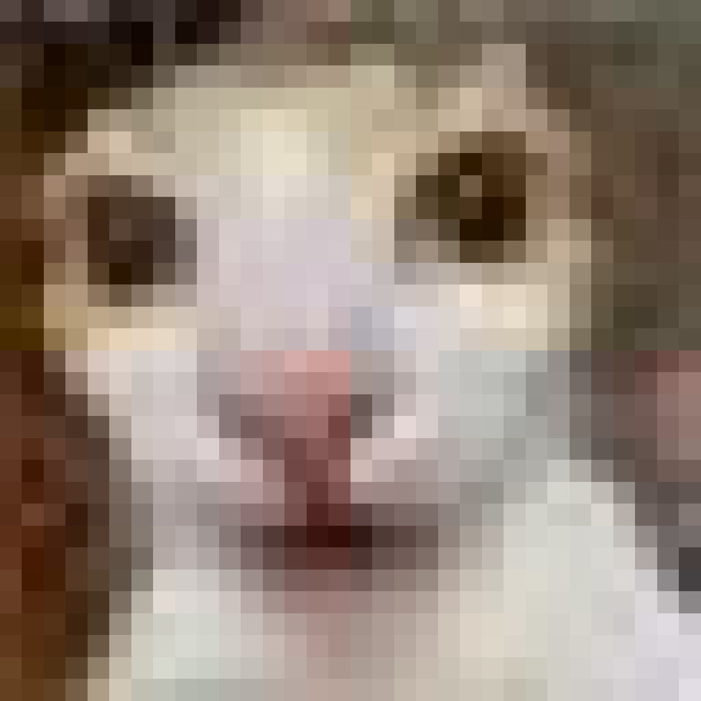
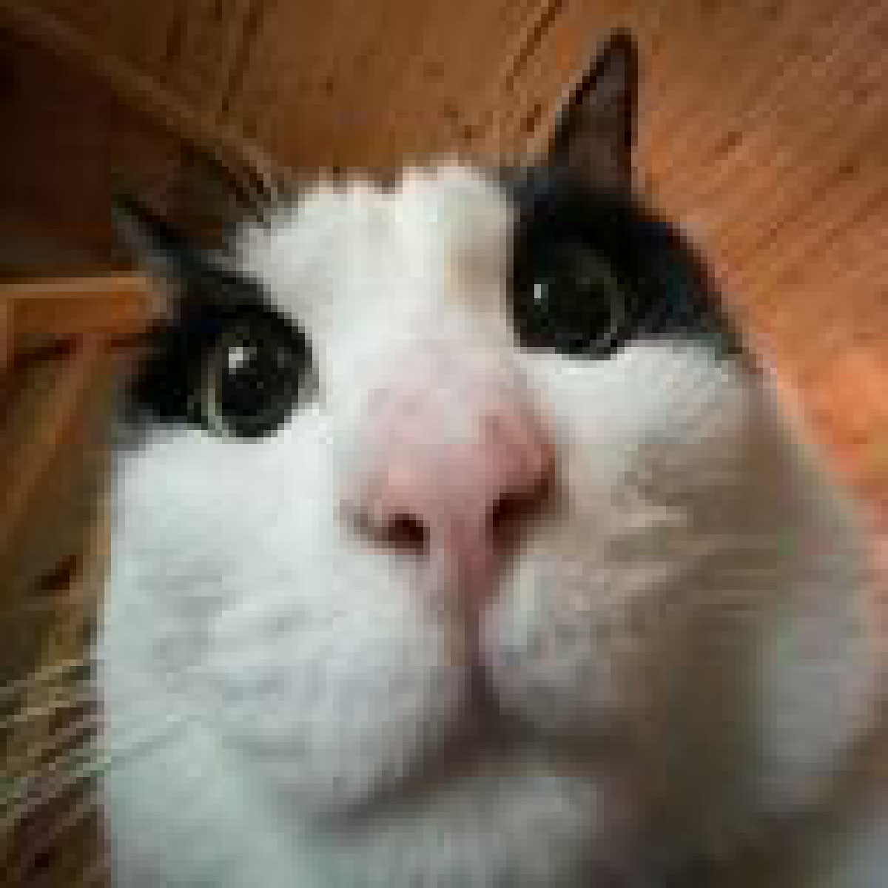
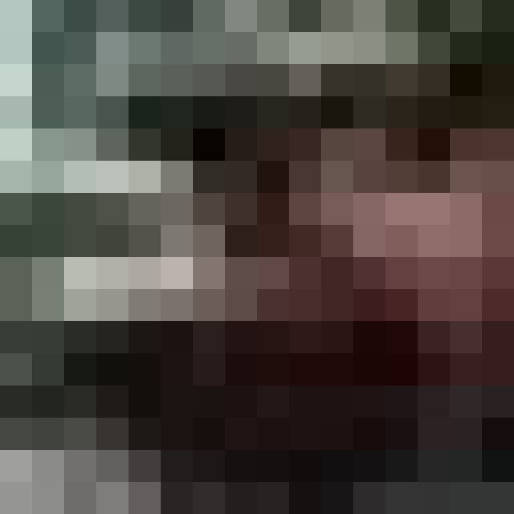
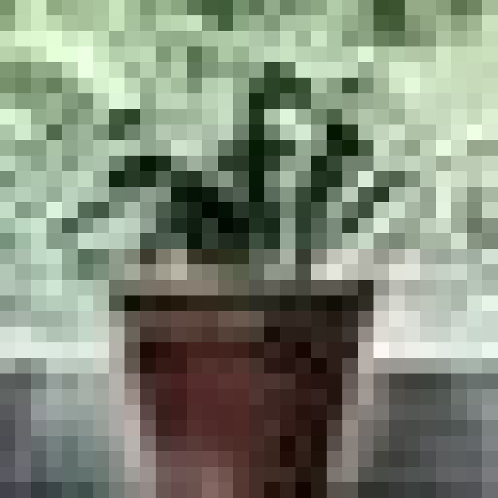
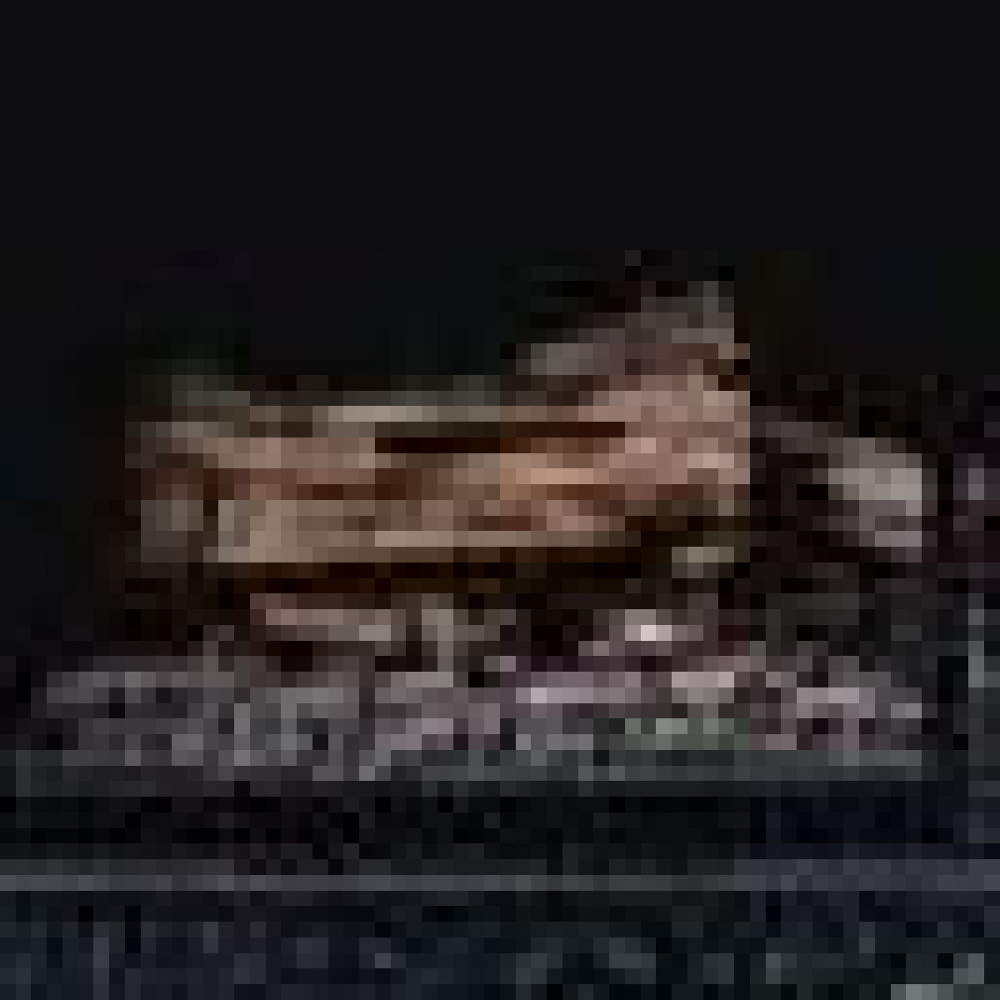
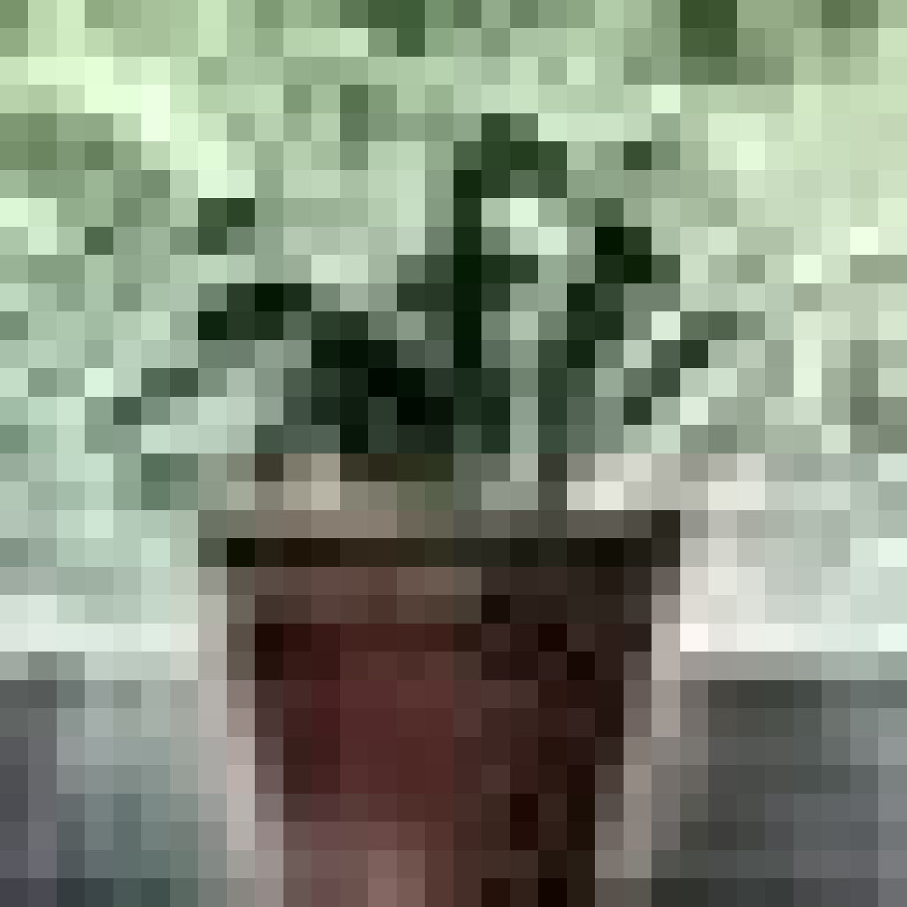
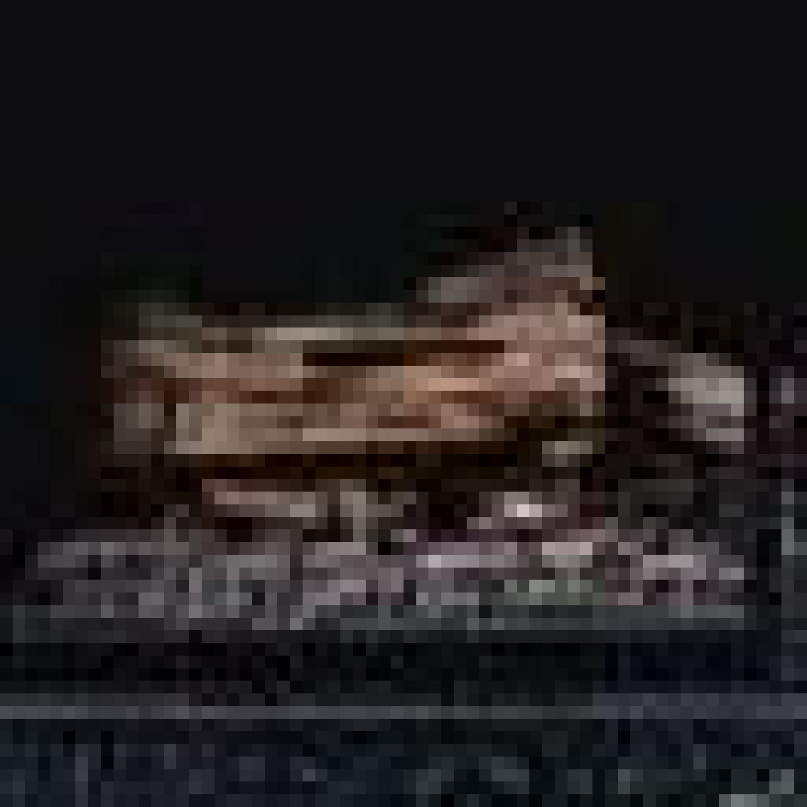

Pixelated
Pixelated



Designed With: Krita
Resized: Created by taking large images off the internet and using the resize function to pixelate them.
The pixelated project had us creating pixelated images using mainly two different methods. This project was the first of the class, and while it required Photoshop, I didn't realize I had access to it then, so I utilized the very similar app Krita. This did make it more difficult as none of the tutorials catered toward that program, and because of that, I had to research some things on my own how to figure out how to use the program, and that led me to a deeper understanding of this assignment. And in the end, I had a lot of fun, and I'm quite pleased with a couple of my images.




